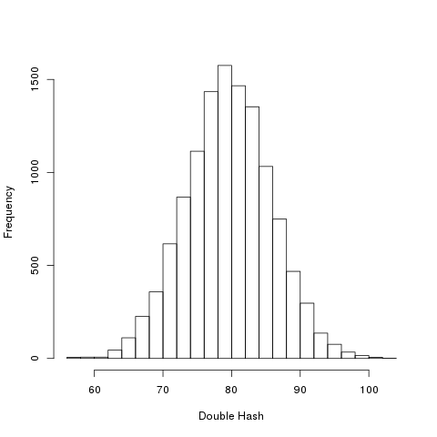
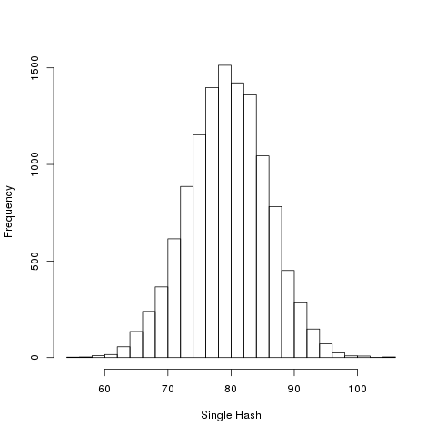

I will consider the space of bitstrings of a fixed length as a metricspace \((X,d)\) where the metric is given by the Hammingdistance \(d(x,y)\) which calculates the number of sites on which two bitstrings \(x\) and \(y\) differ.
Now, I will consider a hash function as a self map \(f\colon X\to X\).
The main objects of interest for today’s post is the distributions of the numbers \[d(f(f(x)),f(x))\] for every \(x\). I would like compare the distributions of numbers with \[ {d(f(x),x)}\].
I am going to use some code from last two posts, which are not shown here.
Let us see the results for MD5:
Two-sample Kolmogorov-Smirnov test
data: as.matrix(X[, 1]) and as.matrix(X[, 2])
D = 0.0167, p-value = 0.07134
alternative hypothesis: two-sidedThere is no discernible statistical difference.
Now, the results for SHA1:
Two-sample Kolmogorov-Smirnov test
data: as.matrix(X[, 1]) and as.matrix(X[, 2])
D = 0.0128, p-value = 0.2764
alternative hypothesis: two-sided 
Again, there is no discernible statistical difference.